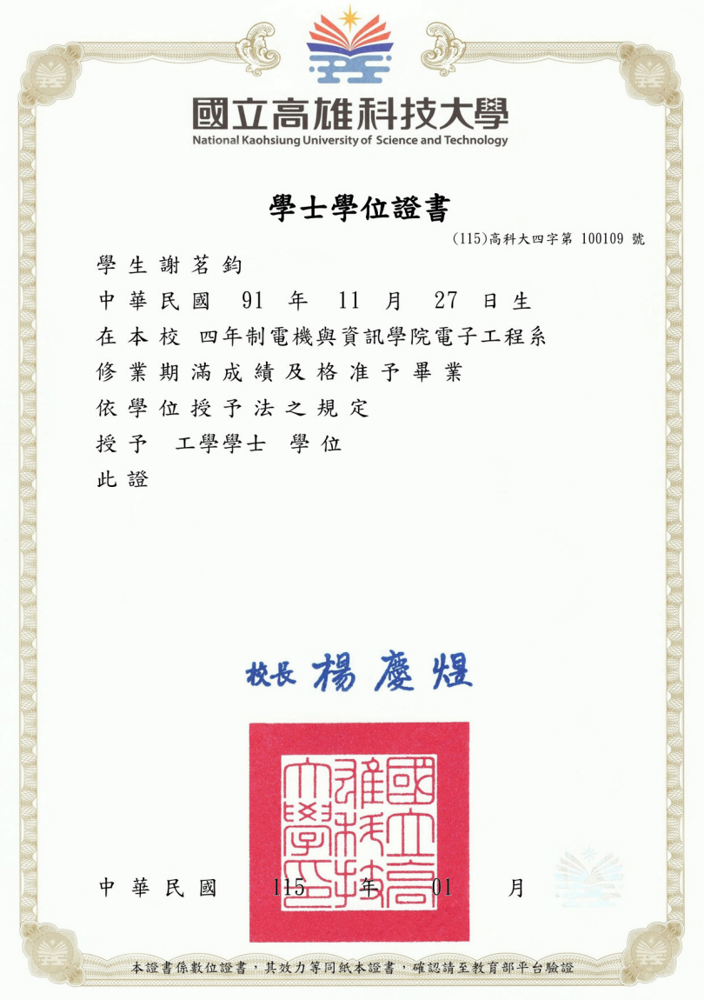
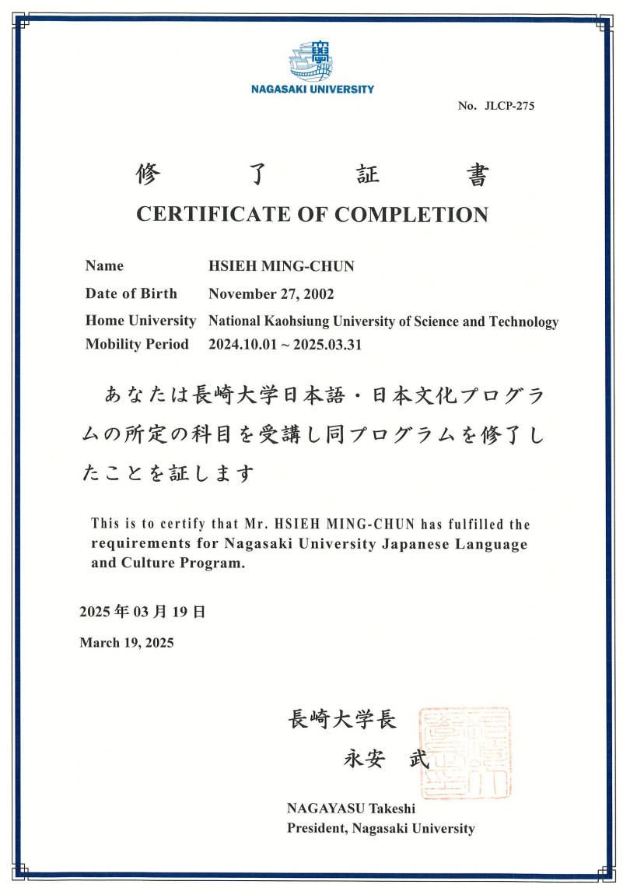

專業摘要
- 1. 背景與硬體專長：電子工程系背景，具備軟硬體整合思維，熟稔大學時期 IC 電路設計、IC Layout、離散電路設計與 PCB Layout 等硬體基礎。
- 2. 軟體與自動化：專精於 Go/Python 自動化工具開發、GUI 設計與 Android 全端交付，擅長將複雜繁瑣的日常硬體維修與檢測流程，轉化為直觀、安全且高效的一鍵自動化軟體解決方案。
- 3. 跨國與多元能力：擁有 JIRA 系統維護、PLM 流程優化與日語 N2 雙語能力，具備 Garmin AOEM 跨部門溝通與赴日技術支援實務，並考取國家領隊執照，展現優異的跨文化交流與國際移動力。
主要成就
- 1. 自動化工作流程（一鍵自動建案）：痛點為流程繁瑣需人工手動交叉比對、下載及填寫建單，極其耗時，因此開發一鍵自動建單程式，單案處理 30分鐘 => 2分鐘。
- 2. RMA / OOW 整合處理系統（OOW PRO）：痛點為保修外報價與備機回覆均由人工編輯，格式不一且易出錯，因此開發 OOW 整合工具與 LINE 通知，文字轉換 3分鐘 => 1分鐘。
- 3. TrackClose 售後案件追蹤系統：痛點為每日需在不同系統間人工交叉比對上百筆資料並跟催，極易漏件，因此開發非同步爬蟲與 Union-Find 項目綁定，實現一鍵自動比對分類與跟催。
- 4. Horizon 憑證橋接安全工具：痛點為多套自動化工具帳密明文散落於各電腦中，資安風險極高，因此開發雙因子雲端解密與 CLI/GUI 憑證中心，讓程式 100% 不儲存明文密碼。
工作與實習經歷
客戶服務工程實習生
2025.07 – 2026.06
Garmin 台灣航電 · AOEM 客戶服務工程部
- 主導開發 4 套內部自動化與基礎工具（Go / Python），縮短售後維修單案處理時間自 30 分鐘至 2 分鐘，提升整體流程效率達 93%。
- 設計與重構 JIRA 與客戶維修履歷比對系統（TrackClose），結合 OCR 驗證碼辨識與 Union-Find 算法進行關聯案件綁定，自動對照每日上百筆資料，消除人工手動比對的失誤與漏單率。
- 建構與維護 團隊憑證安全橋接器（Horizon），導入 AES-256-GCM、DPAPI 與 HMAC 稽核，保障所有自動化腳本內 100% 無明文密碼儲存，強化企業資訊安全。
- 協調 Official LINE 客訴與 JIRA 建案，追蹤並分析車載軟體黑畫面客訴，定位故障與特定手機型號、iOS 版本的關聯性，並與 AOEM 研發團隊跨部門合作修復根因。
- 派駐 日本支援國外產品重工與現場故障排除（Troubleshooting），擔任中日雙語現場技術對接與協調人，加速原廠與客戶間的溝通與問題解決時程。
- 發表 實習成果專案簡報，向管理階層**展示**自動化系統架構與業務效益，獲高層高度肯定並成功將工具**推廣**至其他業務組。
個人作品與代表專案
【TrackClose 售後案件追蹤系統】
使用技術：Python, Tkinter, Selenium, Tesseract OCR, JIRA API
作品核心：自動爬取並交叉比對 JIRA 案件與客戶維修履歷，將每日案件自動分流分類，提供專員一鍵回填與上傳的桌面工具。
核心貢獻：為解決專員手動交叉比對上百筆資料極耗時且易漏單的痛點，引入 Union-Find（併查集）算法進行同車牌或關聯單號的群組綁定，並設計非同步爬蟲與 QueueHandler 防止 GUI 卡死；優化無頭模式下的 Tesseract OCR 辨識率以自動通過登入驗證碼。
成果與連結：單案處理時間大幅縮短，徹底消除人工對照失誤，實現一鍵自動化追蹤。 🔗 GitHub 原始碼
【自動化工作流程系統】
使用技術：Python, Selenium, OpenPyXL, LLM API, JIRA API, Threading
作品核心：實現售後案件「下載 → 比對 → LLM 文本解析 → 格式化 → JIRA 自動建單」的一鍵式全自動建案系統。
核心貢獻：解決手動登入多系統、下載記錄、閱讀長篇日誌並手動在 JIRA 建單之極度繁瑣流程。整合 Selenium 網頁爬蟲與 LLM API，自動提取結構化故障描述，並設計多執行緒（Threading）以支援雙帳號並行建案。
成果與連結：單案處理時間由 30 分鐘縮短至 2 分鐘，流程效率提升達 93%。 🔗 GitHub 原始碼
【Horizon 憑證橋接安全工具】
使用技術：Go, AES-256-GCM, Windows DPAPI, HMAC, CLI/GUI
作品核心：為團隊內部多套自動化工具提供安全存取 JIRA 與客戶系統憑證的金鑰管理橋接器。
核心貢獻：解決多套自動化工具將帳密明文寫在腳本或設定檔中，導致資安洩漏風險極高的痛點。以 Go 語言開發安全憑證中心，設計雙因子雲端金鑰解密，結合本地 Windows DPAPI 保護與 HMAC 加密日誌稽核。
成果與連結：所有自動化工具改採橋接器安全調用認證，達成程式腳本內 100% 無明文密碼。 🔗 GitHub 原始碼
證照與里程碑
語言證照與國外實務
- 日本語能力試驗 (JLPT) N2：具備中日雙語工作溝通能力，能與日本原廠及客戶進行第一線技術支援與協調。
- 日本國家領隊執照：取得國家認證領隊資格，證明具備優異的國外適應力、跨文化交流與危機協調能力。


專業證照與技術里程碑
- 電腦與電子相關技術證照：具備電腦軟硬體裝修、數位電子等專業技術士能力，掌握硬體排錯與數位電路基礎。
- 自動化工具落地部署：於實際工作場景主導並部署 4 套自動化系統，實現 30 分鐘 => 2 分鐘的流程突破，取得 100% 密碼去明文安全稽核。
學歷與海外經驗
國立高雄科技大學
電子工程系 學士（2021 – 2025）
專攻 IC 電路設計、PCB Layout 以及軟體自動化整合。

日本 長崎大學
學術交換留學
深造國外交流與在地工程學術研究，厚植國際化思維。
